The problem is not simply that people cannot meet others.
It is that conventional platforms may not adequately address the emotional and contextual reasons people seek connection.
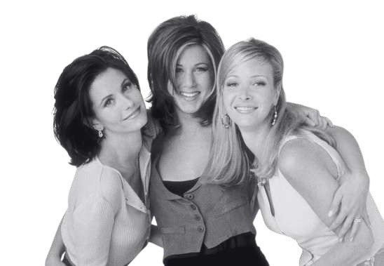
Belong.
Meaningful companionship, when you need it.
Belong is a companionship-focused service designed to make meaningful human connection more accessible, emotionally safe, and contextually relevant. It explores how people can find someone to talk to, share experiences with, and feel understood by, without the pressure of romantic expectations or the obligation to maintain constant interaction.
Loneliness does not always arise from being physically alone. It can emerge when people lack someone who understands their experiences, shares their interests, or is available during moments of emotional need.
Rather than treating connection as a numbers game, Belong focuses on the emotional needs that motivate people to seek companionship, from wanting someone available during a difficult night to finding a person who shares their interests, experiences, or perspective.
Who is a companion?
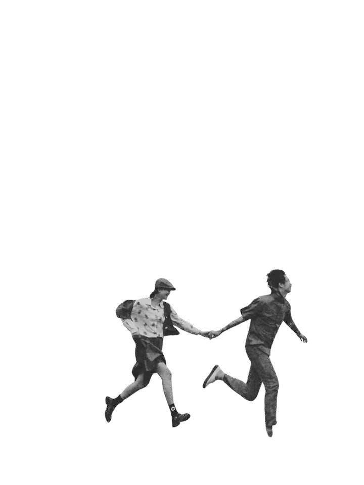
A companion is someone who provides presence, connection, and a sense of togetherness.
They are someone you can spend time with, share experiences with, talk to, or simply exist alongside without necessarily needing a romantic relationship.
They can also be someone who makes you feel emotionally connected, understood, or less alone.
What people actually seek
Primary interviews were conducted with people who had experience using Hinge, including past and present users, to understand the motivations, behaviours, expectations, and emotional experiences associated with seeking companionship. The material was examined using in-vivo coding, emotional coding, and value coding.
“Someone to talk to” really means to feel heard, not alone, reassured, that I matter, without the pressure of romance.
The dimensions of companionship
Four primary needs emerged: presence, comfort, belonging, and understanding. Further exploration identified validation, exploration, intimacy, and safety as additional dimensions.
Companionship with purpose
Sometimes, sharing a moment with another person is enough. The relationship itself becomes the objective, without a specific emotional outcome being required.
The relationship becomes a means of fulfilling an emotional need. The user may be seeking reassurance, presence, validation, shared curiosity, or an opportunity to express themselves.
From loneliness to a specific need for connection
Perceived similarity beyond age
The need to find someone who shares your wavelength, humour, interests, or way of seeing the world. Someone with whom connection feels natural rather than forced.
Emotional availability beyond gender
The need for someone who is available during quiet, vulnerable, or overthinking moments. Someone who listens without requiring a reason to talk or immediately offering solutions.
What makes it worth it
{{ d0.d }}
{{ d1.d }}
{{ d2.d }}
{{ d3.d }}
{{ d4.d }}
User activity mapping
Companionship can emerge through structured conversations, shared activities, casual interactions, or simply being present with another person. Activity mapping explored how these experiences occur online and offline, identifying potential entry points for a companionship service.
Tested whether emotional needs and personality match people better than shared interests.
Validated how people seek and start companionship. Result: Preference > Shared interest.
Deep conversations hold companionship
The five drivers create the conditions that allow people to move beyond surface-level exchanges.
Patterns, not personalities
These archetypes are behavioural patterns rather than fixed personality types. A person may move between them depending on their circumstances. Play a memo to hear what each one says.
{{ arch.q }}
{{ arch.o }}
{{ arch.needs }}
{{ arch.pain }}
How might we design a service ecosystem that enables psychologically safe, context-sensitive companionship for young adults during everyday transitions, rather than simply helping them meet new people?
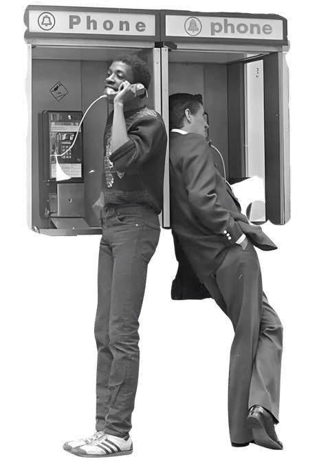
Companionship with purpose anchored by deep conversations.
Young adults need an accessible and psychologically safe way to find contextually relevant companionship that supports authentic, low-pressure human connection during different phases of life, particularly during periods of transition, stress, and everyday loneliness.
Music as an anchor
Can music make it easier for strangers to start a conversation, and can that conversation grow into companionship?
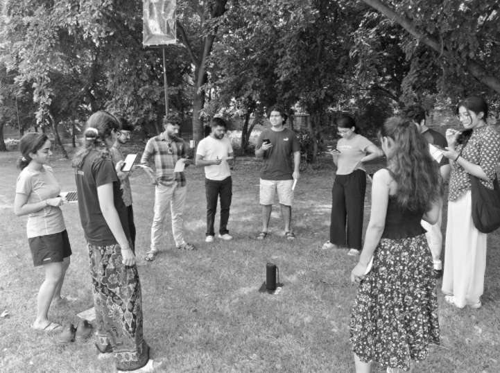
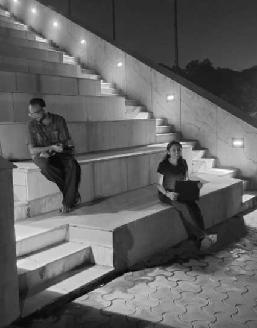
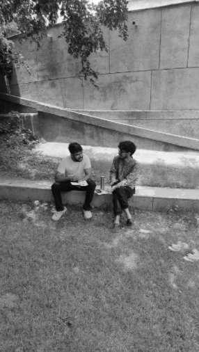
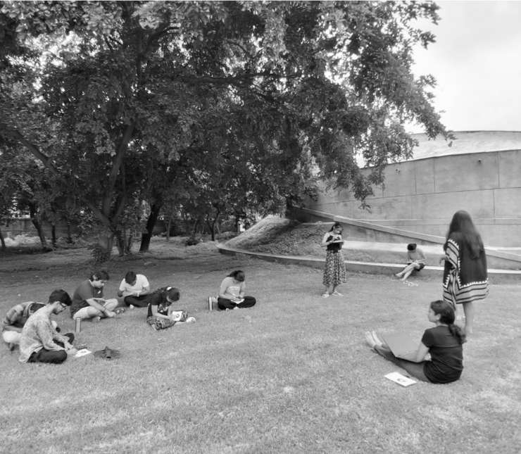
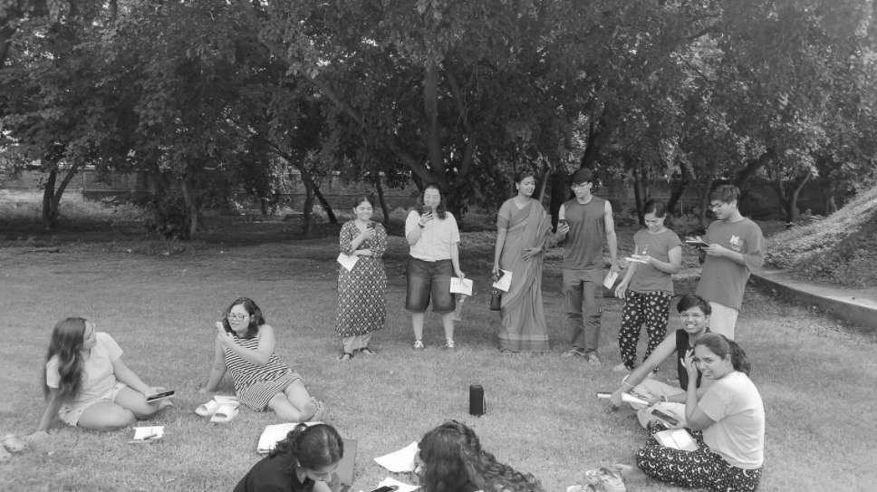
Music can connect to memories, identity, moods, personal experiences, and shared interests. Discussing a song may feel more natural than beginning with a generic introduction. Instead of A ↔ B, we create A ♪ B.
The session · setlist on a waveMusic worked best as a bridge into connection, not as the destination.
A shared activity lowered the pressure of meeting a stranger, because people could start with “listen to this” instead of opening up about themselves. But connection only grew when the activity handed over to conversation at the right moment.
{{ r.d }}
Storytelling as an anchor
Can anonymous story sharing be a low-pressure entry point for conversations between strangers?
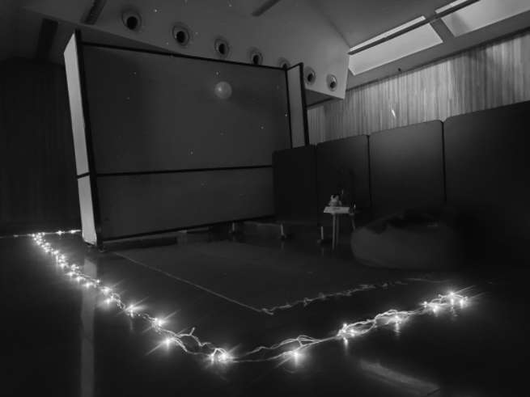
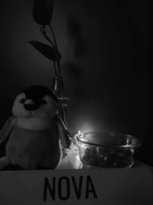
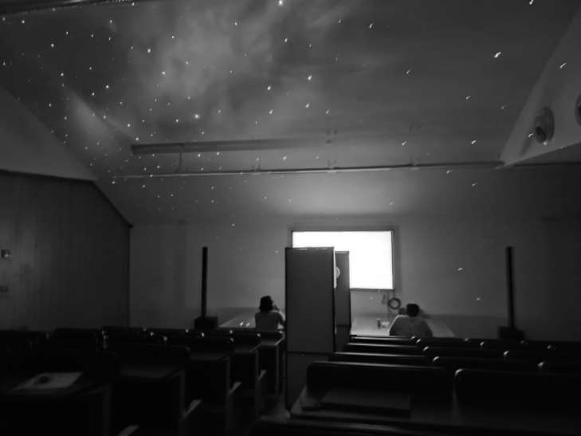
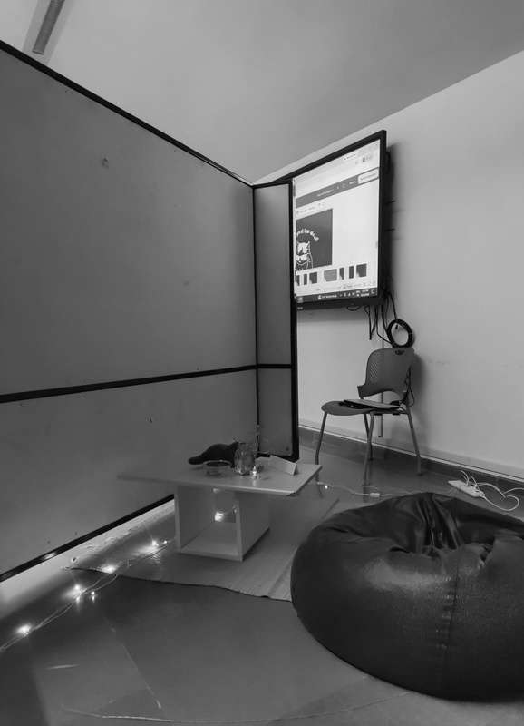
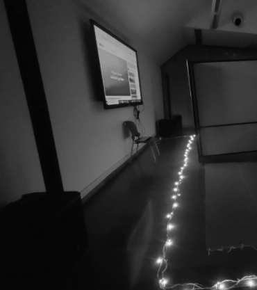
{{ g.o }}
Storytelling shifted the focus from what people like to what people have experienced and how they interpret it, a pathway into companionship based on shared meaning rather than similarity alone.
Where Belong sits
Letting it out in the universe
The visual direction of Belong should reflect the emotional character of the service: calm, personal, reflective, and welcoming. The interface should create a sense of space rather than urgency. A dark interface with subtle gradients supports an immersive, reflective experience, particularly for music and late-night interactions, while maintaining strong contrast and readable text.
Belong should feel less like a competitive social feed and more like a space where users can explore connection at their own pace.
{{ stSel.t }} · where it happens: {{ stSel.w }}
{{ r.t }}
{{ r.d }}
More than 12 PRs needs premium (the cigarette model).
Above and below the line
Service logic: User need → Relevant entry point → Interaction → Evaluation → Continue, pause, or exit
{{ s.t }}
{{ l.s }}
From a blank account to things that reveal you
Profile data↗Better matching↗Better PR acceptance↗Better conversations↗Higher retention
Prompts fade as comfort grows
A controlled space where two users move from a story-based connection toward meaningful conversation and, potentially, sustained companionship.
1 PR = 1 opportunity for human connection. Monetise enhanced functionality, never the connection itself.
One recording, from first breath to first PR
A creation space where personal thoughts, memories and experiences become audio stories that others can discover and use as a starting point for meaningful connection.
“I have something to say.”
“I want to talk to you.”
“I want to come back and talk to you again.”
so all we are saying is,
someone out there gets it..
go find them on Belong.